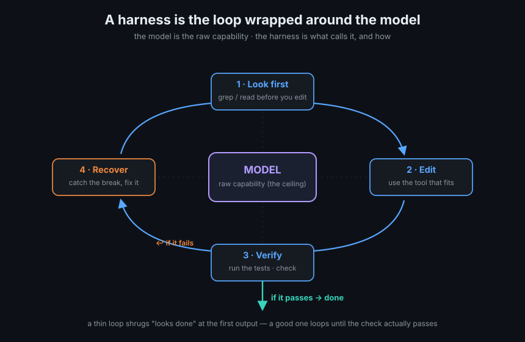
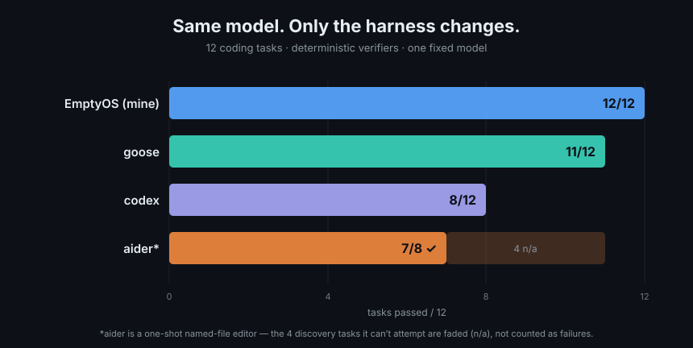
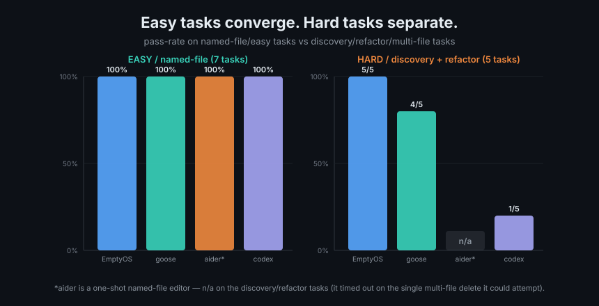
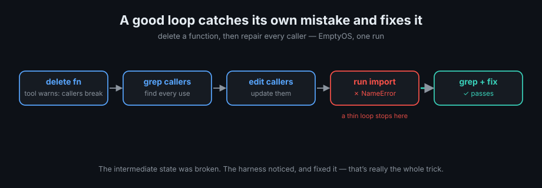
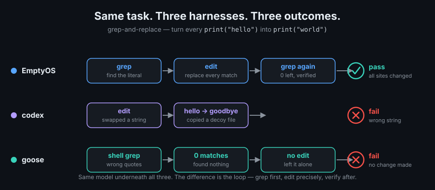
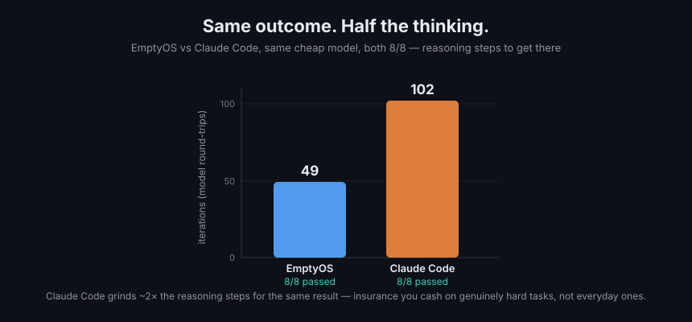

AI coding agents: is the model or the harness the bottleneck?
Most comparisons of AI coding agents are really comparisons of the model. Claude vs GPT, frontier vs local, expensive vs cheap. That's the axis everyone argues about.
After a while on a small experiment, I've come round to thinking we underrate the other half of the system: the harness.
The harness isn't my idea — it's just the name for everything wrapped around the model: the tools it can call, whether it looks before it edits, whether it checks its own work, what it does when it breaks something, and how it decides it's finished. The model sets a ceiling on what's possible; the harness decides how much of that ceiling you actually get.

To test this, I built my own harness inside EmptyOS, a personal "operating system for thinking" I'm putting together, and it's aimed purely at real-world utility rather than leaderboard benchmarks. I built the first iterations of the system by leaning hard on the best AI coding tools available. The part that actually took work came after: pulling it off those tools one by one, until the harness could stand on its own instead of being a thin wrapper over someone else's API.
So the question I wanted to answer was simple: with the model held fixed, how much does that harness actually decide the outcome? This is the first piece of EmptyOS I've put through a test like this. The rest comes later.
The experiment¶
I fixed the model and swapped out the harness around it.
On one cheap pay-per-use model I put four harnesses head to head — EmptyOS, Aider, Goose and Codex — across twelve small Python tasks. On a second, cheaper cloud model I added Claude Code and ran the five of them on an eight-task subset. Every task was checked by a deterministic verifier: run the tests, fuzz the output against a reference implementation, check the imports, grep for symbols that should be gone. Nothing was graded on "looks about right."
What changed when only the harness changed¶
Same model, twelve tasks: EmptyOS got 12 of 12, Goose 11, Codex 8, and Aider 7 of the 8 it could actually attempt (the four discovery tasks it isn't built for are marked n/a, not failed).

The ranking is less interesting than where the harnesses came apart. On the easy stuff — write a small utility, fix a typo, edit one named file — nearly everything passed. When the task is that contained, the model carries it. The gaps opened up on the structured work: multi-file refactors, deleting a function and fixing everything that called it, searching a tree to find what to change, coordinated edits where the first move breaks something you then have to notice and repair.
That's the pattern I keep coming back to. Easy tasks lean on the model; hard tasks lean on the harness.

Why it mattered¶
None of it was about one agent being smarter — it was about how the tools were wired for the job.
Take the delete-a-function-and-fix-the-callers task. EmptyOS's delete tool doesn't just remove the function and move on — it flags that the callers are now broken. That nudge sends the loop off to grep for the references, edit them, run an import to check, and when it hits a NameError from a half-finished edit, go back and fix it. The intermediate state was broken; the harness noticed and recovered. That's really the whole trick.

Another task was about as simple as it gets: change print("hello") to print("world"). The catch is a decoy — the folder also has a file that already contains print("goodbye"), sitting there to see whether an agent stays locked on the literal it was actually asked for. Codex didn't: it latched onto the decoy's string, swapped hello for goodbye instead of world, and then "verified" that no hello remained — true, and beside the point. Goose failed the same task a different way: on Windows it searched with shell quoting that matched nothing, decided there was nothing to replace, and left the file alone (on the other model it stumbled the same way and then recovered). Neither is the model being dim — the same model under my harness kept to the literal and passed. It's the loop around it: grep for the exact target, edit, then check against what was actually asked.

A caveat on these traces: they're single runs, and I'm showing them to make the loop visible, not to rank the tools. Any capable agent can slip on a given run, and these CLIs may well do better in their own native setups than inside my comparison — I ran them through adapters. The pass-rate chart above is the actual comparison; the traces just show where the difference tends to live.
That last one is the bit I think benchmark writing tends to skip. A perfectly capable model will still fail if the harness hands it the wrong tools, the wrong loop, or a format it can't use.
When a harness flips with the model¶
The thing that surprised me most was the same harness behaving differently depending on the model underneath it.
Aider passed a diagnostic task on one model and failed it on another — not because the second model was worse at reasoning, but because it wrote its tool calls as markup like <function> and <tool_code>, and Aider couldn't do anything with that. Whether the model can actually speak the harness's tool format turns out to be its own variable, and a decisive one. A model can be plenty smart and still get nowhere if it can't talk to the harness.
That's roughly why I think a good harness makes the model swappable. EmptyOS went 12/12 on the first model and 8/8 on the second one's tasks; the thinner setups were more brittle across the switch.
Efficiency vs persistence¶
On the eight-task subset, EmptyOS and Claude Code both passed everything. The difference was how hard they worked to get there — EmptyOS finished in 49 iterations, Claude Code in 102, at roughly the same wall-clock time.

I don't read that as Claude Code being worse. A heavier harness buys persistence, and persistence is the sort of thing you don't need most days and are very glad to have on the days you do. It squares with something else I saw: a free local model on my own GPU cleared four of five tasks on a harder set for nothing, and the one it missed was a fifteen-file refactor where a frontier model's stubbornness paid off. The expensive setup didn't really win on the ordinary tasks — it won on the nastiest one.
What I got wrong¶
This was the useful part. My first set of results was actually wrong, and I didn't catch it myself.
I handed the whole thing to another model, Codex, and asked it to tear the benchmark apart. It did that four times over, and it found real problems. My first pass flattered my own system, because I'd built the test and my mistakes happened to fall in my favour.
I'd blamed other harnesses for my own setup errors — I hadn't given Aider the files it was supposed to edit, for one. And I'd been counting "this tool isn't built for this kind of task" as "this tool failed the task," which isn't the same thing. There was also a false negative I'd nearly believed — a "the fix doesn't work" result that came from a config flag sitting in the wrong namespace, so the fix had never actually run. I only trusted that negative once I'd checked the flag reached the code.
Two smaller lessons: "passes a tool-call probe" isn't "good at real work," and some cloud-quota models logged as $0 when they're really a flat subscription.
The uncomfortable version is that my first instinct was to publish the table that flattered EmptyOS. Easy to do, and wrong. The audits stopped me.
A quick caveat on method¶
Before the verdict, I'd rather you took this seriously than took any single number too seriously: this is a single run per cell, so the individual results are noisy; these are twelve bounded Python tasks, not a large repo or a multi-hour job; and one of my verifiers was too loose to really discriminate. Treat it as a field note, not an academic paper.
Where I've landed¶
Model or harness? Both, but not evenly, and not everywhere.
For simple, single-file work, most competent harnesses on a halfway-decent model will get you there, and the choice of model barely shows up. For structured work — the refactors, the coordinated edits, the searching — the harness is doing most of the deciding. And what a good harness does isn't exotic: look before you edit, use tools that fit the task, check after each step, fix it when the check fails, and stop only when the thing is actually done.
Once the model is good enough, the harness is where the outcome is won or lost. That's also why I'm fairly optimistic about the cheap and local models — for a lot of everyday-to-medium coding they're already enough, as long as the harness around them is any good. The frontier models still earn their place, mostly on the long, stubborn tasks where persistence is the whole game.
The lesson is the same one power-systems work drilled into me: control your variables, measure something you can't argue with, and be most suspicious of the result you like best. The tooling keeps getting cheaper. The discipline doesn't.
Built with EmptyOS — an open-source mind companion that thinks and creates with you, not for you. Try the live demo (sample vault, sign-in token included) · Source on GitHub.